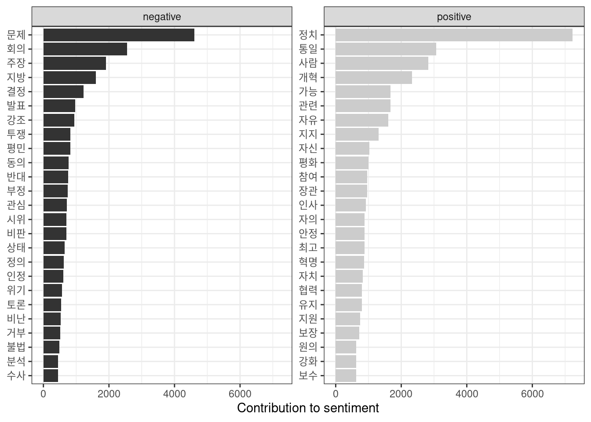
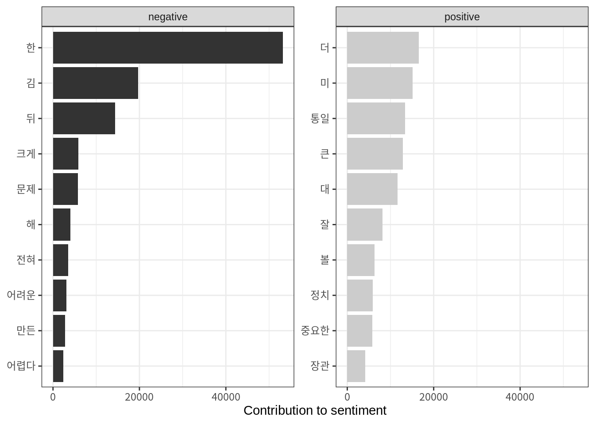
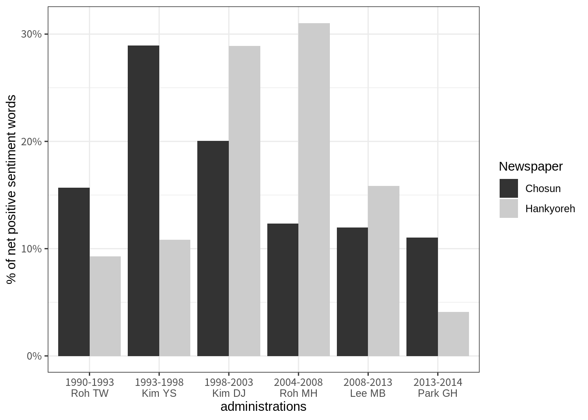
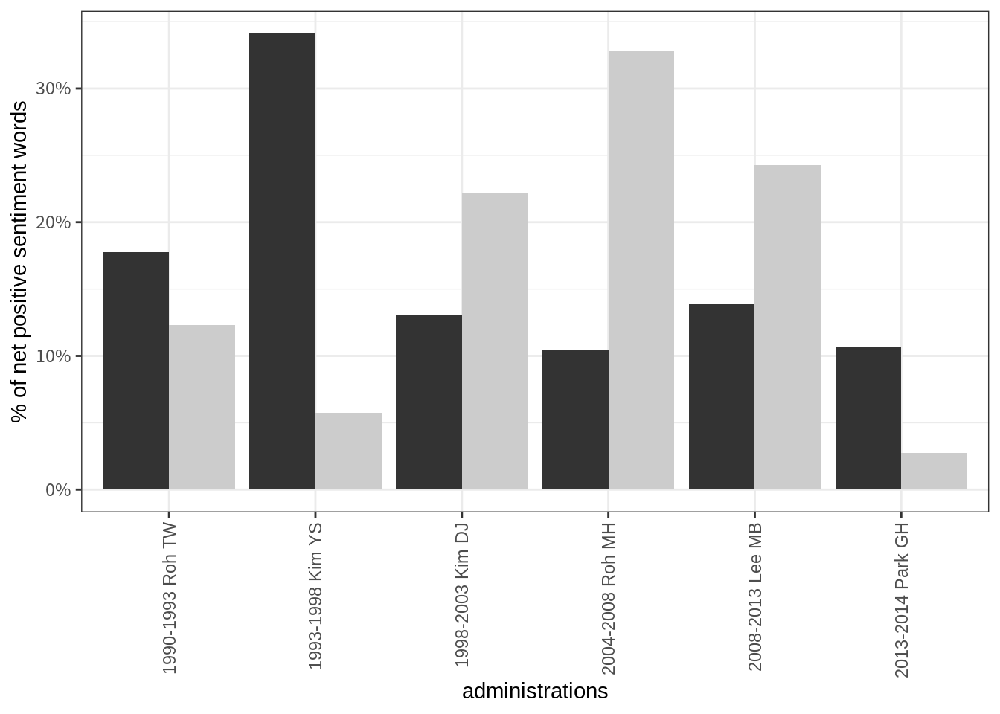

Load processed data
# saveRDS(all_news, "data/unification_news.RDS")
all_news <- readRDS("data/unification_news.RDS")# save legit stopwords, and add some
stopwords <- tibble(
tokens = stopwords::stopwords("ko", source = "stopwords-iso"),
lexicon = "stopwords-iso")
stopwords <- stopwords %>%
add_row(tokens = c("들이", "하기", "그것", "때문", "것으로", "있는", "위해",
"대한", "등을", "했다", "말했다", "만원", "한다", "지난",
"것은"," 것이", "위한", "것이다", "하는", "있는", "이라고",
"이날", "밝혔다", "오후", "통해", "대해", "그는", "나는",
"것이", "없다", "같은", "내가", "있었다", "경우", "등이",
"그는", "지음", "우리는", "아니라", "없는", "것을", "씨는",
"억원", "당시", "지난해", "현재", "이에", "관련", "하고",
"그런", "그의", "가장", "많은", "있습니다", "일까지", "오는",
"일부터", "오전", "가운데", "다시", "라는", "모든", "라고",
"그가", "세기", "것도", "이를", "있다는", "특히", "이어",
"자신의", "때문이다", "많이", "않고", "새로운", "합니다",
"된다", "등의", "이렇게", "아니다", "지금", "보면", "있을",
"우리가", "사람들이", "이제", "있어", "연다", "최근",
"계획이다", "올해", "이후"),
lexicon = "stopwords-iso") %>%
rename(word = tokens)Process data
tidy_news <- all_news %>%
dplyr::mutate(article = row_number()) %>%
tidytext::unnest_tokens(word, Body) %>%
dplyr::anti_join(stopwords) ## Joining, by = "word"Korean sentiment lexicon
## Parsed with column specification:
## cols(
## term = col_character()
## )
## Parsed with column specification:
## cols(
## term = col_character()
## )Count the emotional words
senti_news <- tidy_news %>%
inner_join(senti) %>%
count(Newspaper, Prezparty, sentiment) %>%
tidyr::spread(sentiment, n, fill = 0) %>%
mutate(sentiment = positive - negative) %>%
group_by(Newspaper, Prezparty) %>%
summarise(m = mean(sentiment)) %>%
mutate(density = m/sum(m)) ## Joining, by = "word"ggplot(senti_news, aes(Prezparty, density, fill = Prezparty)) +
geom_col(show.legend = FALSE) +
labs(x = "governments (1990-2014)", y = "% of net positive sentiment words") +
facet_wrap(~Newspaper, ncol = 2) +
scale_fill_grey() +
theme_bw() +
scale_y_continuous(labels = scales::percent)
Count sentiment words
senti_word_counts <- tidy_news %>%
inner_join(senti) %>%
count(word, sentiment, sort = TRUE) %>%
ungroup()## Joining, by = "word"senti_word_counts %>%
group_by(sentiment) %>%
top_n(10) %>%
ungroup() %>%
mutate(word = reorder(word, n)) %>%
ggplot(aes(word, n, fill = sentiment)) +
geom_col(show.legend = FALSE) +
facet_wrap(~sentiment, scales = "free_y") +
labs(y = "Contribution to sentiment",
x = NULL) +
coord_flip() +
scale_fill_grey() +
theme_bw()## Selecting by n
Did negativity increase in specific administrations?
senti_news_admin <- tidy_news %>%
inner_join(senti) %>%
count(Newspaper, Government, sentiment) %>%
tidyr::spread(sentiment, n, fill = 0) %>%
mutate(sentiment = positive - negative) %>%
group_by(Newspaper, Government) %>%
summarise(m = mean(sentiment)) %>%
mutate(density = m/sum(m)) ## Joining, by = "word"shortgov <- c("1990-1993\nRoh TW", "1993-1998\nKim YS", "1998-2003\nKim DJ", "2004-2008\nRoh MH", "2008-2013\nLee MB", "2013-2014\nPark GH")
ggplot(senti_news_admin, aes(Government, density, fill = Newspaper)) +
geom_col(position = "dodge") +
labs(x = "administrations", y = "% of net positive sentiment words") +
# facet_wrap(~Newspaper, ncol = 1, scales = "free_y") +
scale_fill_grey() +
theme_bw() +
scale_y_continuous(labels = scales::percent) +
scale_x_discrete(labels = shortgov)
Sentiment words in articles that contain the word “nuclear”:
all_news %>%
filter(stringr::str_detect(Body, "핵")) %>%
dplyr::mutate(article = row_number()) %>%
tidytext::unnest_tokens(word, Body) %>%
dplyr::anti_join(stopwords) %>%
inner_join(senti) %>%
count(Newspaper, Prezparty, Government, sentiment) %>%
tidyr::spread(sentiment, n, fill = 0) %>%
mutate(sentiment = positive - negative) %>%
group_by(Newspaper, Government) %>%
summarise(m = mean(sentiment)) %>%
mutate(density = m/sum(m)) %>%
ggplot(aes(Government, density, fill = Newspaper)) +
geom_col(show.legend = FALSE, position = "dodge") +
labs(x = "administrations", y = "% of net positive sentiment words") +
# facet_wrap(~Newspaper, ncol = 2, scales = "free_y") +
scale_fill_grey() +
theme_bw() +
theme(axis.text.x = element_text(angle = 90, vjust = 0.5, hjust=1)) +
scale_y_continuous(labels = scales::percent)## Joining, by = "word"
## Joining, by = "word"
=======Hello, Website!
>>>>>>> 206c52833a0e7671a4f73f0cb421be8270593253